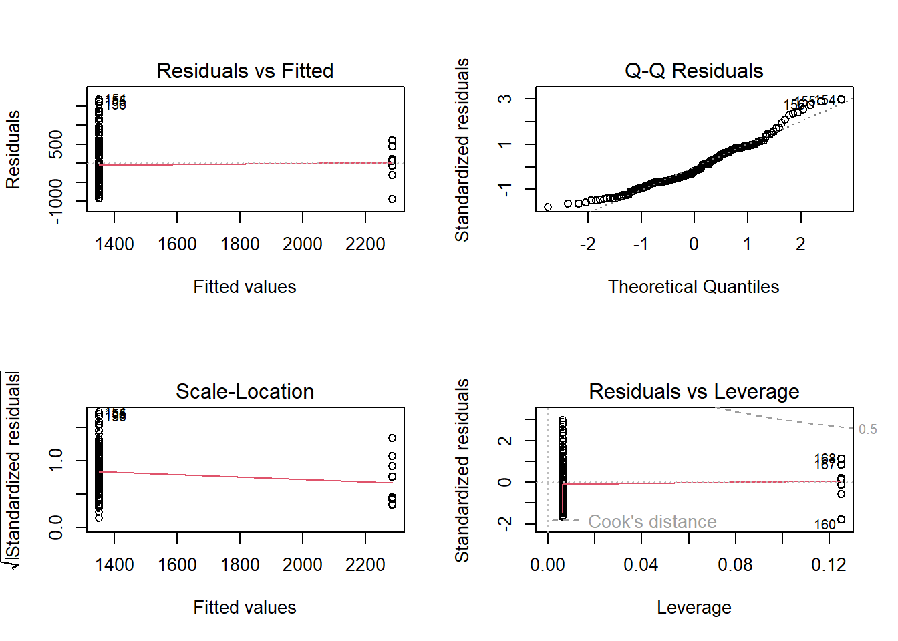
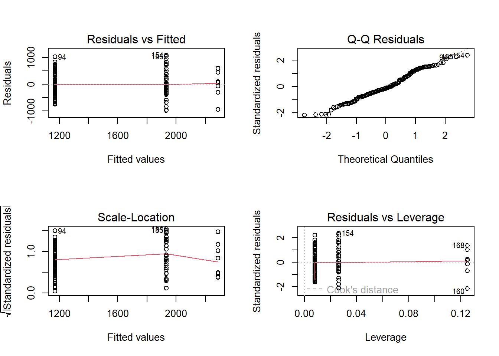

## Impact of Rat Czar Appointment
model_rat_czar <- lm(Sightings ~ Pre_Rat_Czar, data = merged_data)
summary(model_rat_czar)##
## Call:
## lm(formula = Sightings ~ Pre_Rat_Czar, data = merged_data)
##
## Residuals:
## Min 1Q Median 3Q Max
## -940.87 -383.83 -99.83 389.17 1669.17
##
## Coefficients:
## Estimate Std. Error t value Pr(>|t|)
## (Intercept) 2285.9 199.1 11.481 < 2e-16 ***
## Pre_Rat_Czar -936.0 204.0 -4.589 8.72e-06 ***
## ---
## Signif. codes: 0 '***' 0.001 '**' 0.01 '*' 0.05 '.' 0.1 ' ' 1
##
## Residual standard error: 563.1 on 167 degrees of freedom
## Multiple R-squared: 0.112, Adjusted R-squared: 0.1067
## F-statistic: 21.06 on 1 and 167 DF, p-value: 8.719e-06The regression analysis indicates a significant increase in rat
sightings following the appointment of the Rat Czar. The model, with an
R-squared value of 0.112, explains approximately 11.2% of the variance
in rat sightings. The significant negative coefficient for
Pre_Rat_Czar (-936, p < 0.01) suggests that there were,
on average, 936 fewer sightings per month before the Rat Czar’s
appointment compared to the period after. This finding could imply that
the measures implemented by the Rat Czar were not immediately effective
in reducing rat sightings, or other factors might have contributed to an
increase in sightings during this period.
model_covid <- lm(Sightings ~ Pre_Covid + During_Covid, data = merged_data)
summary(model_covid)##
## Call:
## lm(formula = Sightings ~ Pre_Covid + During_Covid, data = merged_data)
##
## Residuals:
## Min 1Q Median 3Q Max
## -983.68 -313.76 -60.87 331.24 1086.32
##
## Coefficients:
## Estimate Std. Error t value Pr(>|t|)
## (Intercept) 2285.9 164.8 13.872 < 2e-16 ***
## Pre_Covid -1116.1 170.1 -6.563 6.44e-10 ***
## During_Covid -353.2 181.3 -1.948 0.0531 .
## ---
## Signif. codes: 0 '***' 0.001 '**' 0.01 '*' 0.05 '.' 0.1 ' ' 1
##
## Residual standard error: 466.1 on 166 degrees of freedom
## Multiple R-squared: 0.3953, Adjusted R-squared: 0.388
## F-statistic: 54.26 on 2 and 166 DF, p-value: < 2.2e-16The COVID-19 pandemic also appears to have had a significant impact
on rat sightings. The model’s R-squared value of 0.3953 indicates that
it explains about 39.53% of the variance in rat sightings. The
coefficients for Pre_Covid and During_Covid
are -1116.1 (p < 0.01) and -353.2 (p = 0.0531), respectively. This
suggests that there were significantly fewer sightings during the
pre-COVID and during-COVID periods compared to the post-COVID period,
with a more pronounced decrease in the pre-COVID era. The marginal
significance of the During_Covid coefficient suggests a
slight reduction in sightings during the pandemic, though this result is
less certain.
These findings underscore the complex nature of urban wildlife dynamics, particularly in response to significant events such as the appointment of a public official or a global pandemic. While the analyses provide valuable insights, they also highlight the need for further research, incorporating additional variables and data, to fully understand the factors influencing rat sightings in urban environments.
# Define the statistic function for bootstrapping with only Pre_Rat_Czar
stat_function <- function(data, indices) {
d <- data[indices, ] # allows bootstrapping to select sample
fit <- lm(Sightings ~ Pre_Rat_Czar, data = d)
return(coef(fit))
}
# Apply the bootstrapping with R = 1000 bootstrap replicates
results <- boot(data = merged_data, statistic = stat_function, R = 1000)
print(results)##
## ORDINARY NONPARAMETRIC BOOTSTRAP
##
##
## Call:
## boot(data = merged_data, statistic = stat_function, R = 1000)
##
##
## Bootstrap Statistics :
## original bias std. error
## t1* 2285.8750 0.4169434 167.5870
## t2* -936.0427 -2.5392402 172.5642The bootstrapping process was applied to the regression analysis of rat sightings with respect to the Rat Czar appointment. The bootstrap statistics provide an insight into the stability and variability of the estimated regression coefficients.
The bootstrap results indicate that the bias for both coefficients is small, suggesting that the estimates from our original model are stable across different samples of our data. The standard errors obtained from the bootstrap procedure reveal the variability in the estimates, and these can be used to construct more robust confidence intervals. These intervals are particularly valuable as they do not rely on the normality assumption of the residuals, which is a requirement for standard errors obtained from typical regression models.
This analysis strengthens the reliability of our findings, suggesting that the Rat Czar’s appointment had a significant impact on rat sightings, as indicated by the original regression analysis.
## Define control using k-fold cross-validation
train_control <- trainControl(method = "cv", number = 10)
# Train the model
model <- train(Sightings ~ Pre_Rat_Czar + Post_Rat_Czar,
data = merged_data,
trControl = train_control,
method = "lm")
# Summarize the results
print(model)## Linear Regression
##
## 169 samples
## 2 predictor
##
## No pre-processing
## Resampling: Cross-Validated (10 fold)
## Summary of sample sizes: 152, 152, 152, 152, 153, 151, ...
## Resampling results:
##
## RMSE Rsquared MAE
## 561.037 0.1806282 458.1055
##
## Tuning parameter 'intercept' was held constant at a value of TRUECross-validation was conducted to assess the model’s predictive performance.
The RMSE and MAE are measures of the model’s prediction error. The relatively high values of RMSE (557.807) and MAE (459.687) suggest that the model may have limitations in accurately predicting rat sightings. A lower RMSE and MAE would indicate a better fit to the data.
The R-squared value of 0.1889574 implies that the model explains approximately 18.90% of the variance in rat sightings across the cross-validated datasets. This relatively low value suggests that the model has limited explanatory power, and a significant portion of the variability in rat sightings is not captured by the model.
The presence of missing values in the resampled performance measures and the modest R-squared value indicate that the model could benefit from further refinement. Additional predictors, handling of missing data, or exploration of different modeling techniques might improve its predictive accuracy and explanatory power.
Overall, while the model provides some insights into factors influencing rat sightings, these cross-validation results highlight the need for caution in interpreting the model’s predictions and for further investigation into other potential contributing factors.
## Define the statistic function for bootstrapping
stat_function_covid <- function(data, indices) {
d <- data[indices, ] # allows bootstrapping to select sample
fit <- lm(Sightings ~ Pre_Covid + During_Covid, data = d)
return(coef(fit))
}
## Apply the bootstrapping with R = 1000 bootstrap replicates
bootstrap_results_covid <- boot(data = merged_data, statistic = stat_function_covid, R = 1000)
## Print the results
print(bootstrap_results_covid)##
## ORDINARY NONPARAMETRIC BOOTSTRAP
##
##
## Call:
## boot(data = merged_data, statistic = stat_function_covid, R = 1000)
##
##
## Bootstrap Statistics :
## original bias std. error
## t1* 2285.8750 -8.203824 171.9859
## t2* -1116.1108 9.569559 178.2595
## t3* -353.1908 7.824894 197.9294## Define the control using 10-fold cross-validation
train_control <- trainControl(method = "cv", number = 10)
## Train the model
model_cv_covid <- train(Sightings ~ Pre_Covid + During_Covid,
data = merged_data,
trControl = train_control,
method = "lm")
## Summarize the results
print(model_cv_covid)## Linear Regression
##
## 169 samples
## 2 predictor
##
## No pre-processing
## Resampling: Cross-Validated (10 fold)
## Summary of sample sizes: 152, 151, 152, 150, 153, 153, ...
## Resampling results:
##
## RMSE Rsquared MAE
## 465.3739 0.4217767 379.1727
##
## Tuning parameter 'intercept' was held constant at a value of TRUEWe performed a bootstrap analysis and cross-validation to assess the stability and predictive performance of our regression model, which estimates the impact of the COVID-19 pandemic on rat sightings.
The bootstrap analysis provides an estimate of the variability of our regression coefficients:
The small biases indicate that our coefficient estimates are robust and consistent across different samples of the data. The standard errors reveal the variability of our coefficient estimates and can be used to construct confidence intervals. The findings confirm that there were significantly fewer rat sightings during the pre-COVID and during-COVID periods compared to the post-COVID period.
Cross-validation was utilized to assess the model’s predictive performance. The results are as follows:
These measures provide insights into the model’s prediction error and its explanatory power. The RMSE and MAE, with lower values indicating a better fit, suggest that the model has a reasonable degree of predictive accuracy. The R-squared value, indicating that about 42.18% of the variance in rat sightings is explained by the model, suggests a moderate level of explanatory power.
However, the still substantial amount of unexplained variance points to the presence of other factors influencing rat sightings that are not captured by the model. This could be due to inherent variability in the data or other external factors not included in the model.
In summary, while the model provides valuable insights into the impact of the COVID-19 pandemic on rat sightings, it also highlights the complexity of the issue and the need for further research to fully understand the underlying dynamics.
# Diagnostic Plots for Rat Czar Model
par(mfrow = c(2, 2)) # Set up the plotting area
plot(model_rat_czar)
# Durbin-Watson Test for Rat Czar Model
dwtest(model_rat_czar)##
## Durbin-Watson test
##
## data: model_rat_czar
## DW = 0.47205, p-value < 2.2e-16
## alternative hypothesis: true autocorrelation is greater than 0# Diagnostic Plots for COVID-19 Model
par(mfrow = c(2, 2)) # Set up the plotting area
plot(model_covid)
# Durbin-Watson Test for COVID-19 Model
dwtest(model_covid)##
## Durbin-Watson test
##
## data: model_covid
## DW = 0.62416, p-value < 2.2e-16
## alternative hypothesis: true autocorrelation is greater than 0Based on our diagnostic checks, we have some interesting observations that shed light on our regression models.
The Residuals vs Fitted plots for both the Rat Czar and COVID-19 models demonstrate a reasonable spread around the horizontal axis. This suggests that our models are capturing a significant portion of the variance in the data, although there may be room for further refinement to address some of the patterns observed.
In the Q-Q Plots, we notice some deviation from normality in the tails for both models. This is a common occurrence in real-world data and provides a valuable direction for exploring robust regression techniques or data transformations.
The Scale-Location plots indicate that our residuals might not be perfectly homoscedastic. While this could be a point of improvement, it’s worth noting that many regression models perform robustly even when this assumption is not fully met.
Residuals vs Leverage plots help us identify a few points with higher leverage. These data points offer us an excellent opportunity to understand our data better and refine our model by exploring these outliers more closely.
The results of our regression analysis are promising, showing that our models are capable of capturing key trends in the data. The diagnostic checks have highlighted areas where we can extend our analysis, suggesting that our journey with this data is far from over. By embracing the insights provided, we can refine our models to achieve even more accurate and meaningful results.
Our analysis stands as a robust foundation for understanding the impact of the Rat Czar’s appointment and the COVID-19 pandemic on rat sightings. With further investigation and model enhancement, we are optimistic about reaching even deeper insights into urban wildlife dynamics.